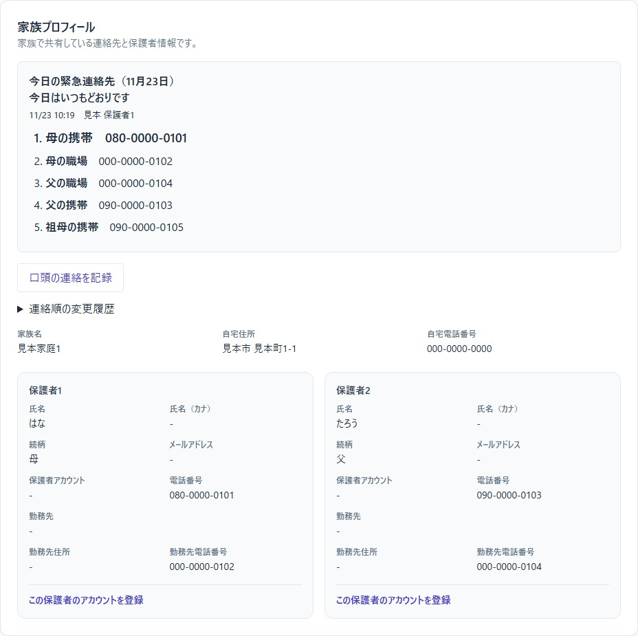
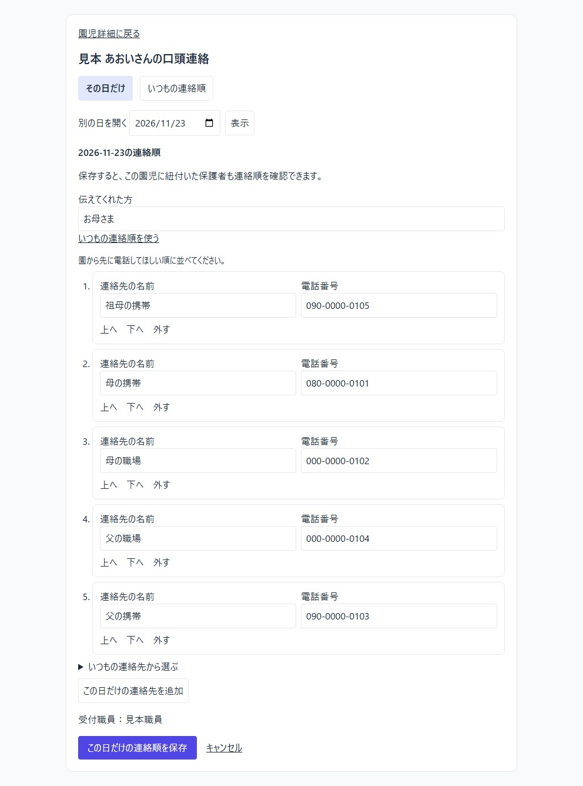
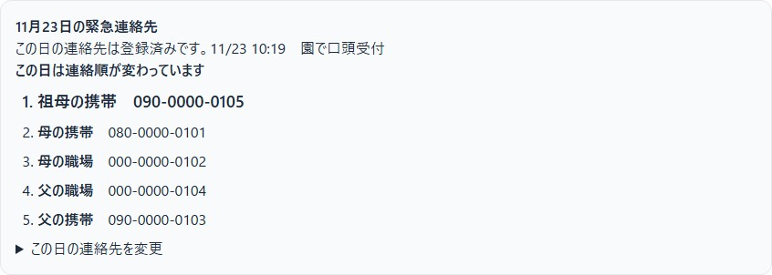
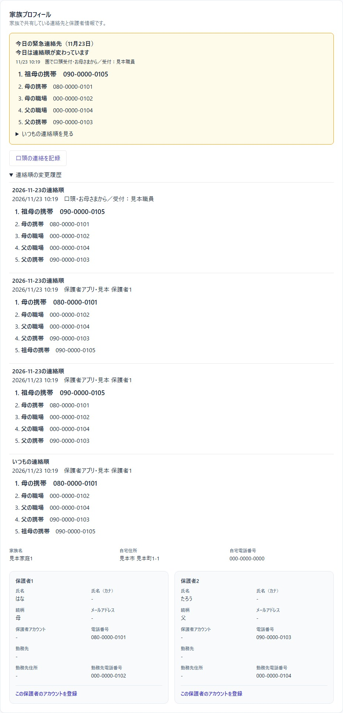
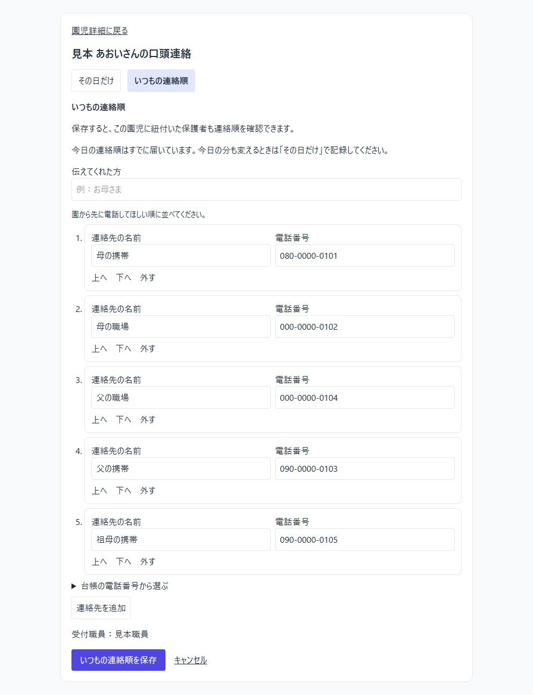
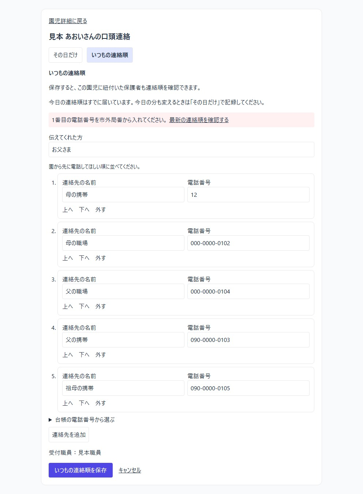
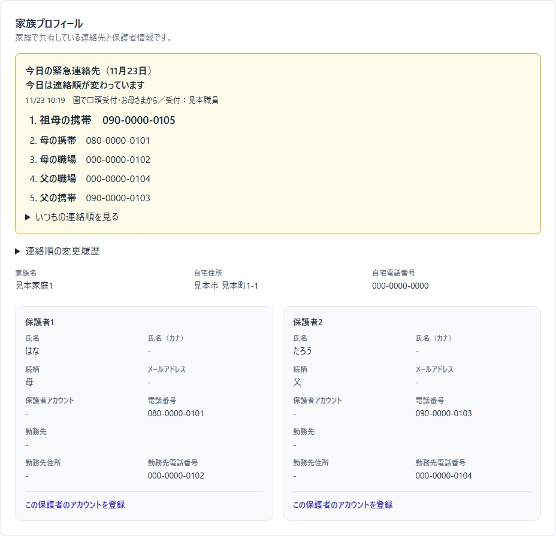

職員向け｜園児情報の編集ができる方
緊急連絡先の変更を口頭で受け付ける
電話や口頭で伝えられた緊急連絡順を、職員が記録します。その日だけか、今後も使ういつもの順番かを、伝えてくれた方に確認します。
開く順番
園児一覧 → 対象の園児の詳細 → 家族プロフィール → 口頭の連絡を記録
1園児を選び、今日の連絡先を確認する
園児一覧から対象の園児の詳細を開き、「家族プロフィール」の「今日の緊急連絡先」を確認します。「口頭の連絡を記録」を押します。
きょうだいがいる場合も園児一人ずつ扱います。欠席連絡を受けたときは、これとは別に出欠確認の電話・口頭連絡受付で記録します。

2対象日と、伝えてくれた方を入力する
その日だけなら「その日だけ」を選びます。別の日は「別の日を開く」で日付を入れ、「表示」を押します。見出しの園児名と日付を確認してください。
「伝えてくれた方」に「お母さま」などを記入します。連絡先の名前・電話番号・順番を確認し、「上へ」「下へ」「外す」や「この日だけの連絡先を追加」を使って整えます。



3保存する前に範囲を見直す
確認した内容で「この日だけの連絡順を保存」を押します。「キャンセル」では入力内容を保存せず園児詳細に戻ります。
保存すると、この園児に紐付く保護者にも連絡順が表示されます。口頭受付だけで、保護者の日次連絡を提出済みにはしません。

4園児詳細と履歴で保存結果を確認する
「今日の緊急連絡先」で先に連絡する相手を確認します。「連絡順の変更履歴」を開くと、内容・受付職員・伝えてくれた方・日時を確認できます。
間違いに気付いたときは、正しい園児と日付を選んで口頭受付を開き直し、確認した順番を保存します。保存前の「キャンセル」と、保存済みの記録の修正を区別します。

5いつもの順番を変える場合
今後も使う番号や順番の変更なら「いつもの連絡順」へ切り替えます。「伝えてくれた方」と連絡先を入力し、「いつもの連絡順を保存」を押します。
今日の回答がすでに届いている場合、通常の順番を変えても今日の回答は変わりません。今日も変更する場合は「その日だけ」で記録します。
エラーが出たら入力を見直します。ほかの方が先に変更した案内が出た場合は、「最新の連絡順を確認する」で開き直し、最新の内容を確かめてから入力します。




6閲覧のみの方が確認する場合
閲覧のみの職員も登録された連絡順と履歴を確認できますが、「口頭の連絡を記録」は表示されません。変更が必要なときは、編集できる職員へ依頼します。

読み終えたら確認すること
このチェックは読み進めるための目印です。業務記録は送信されません。